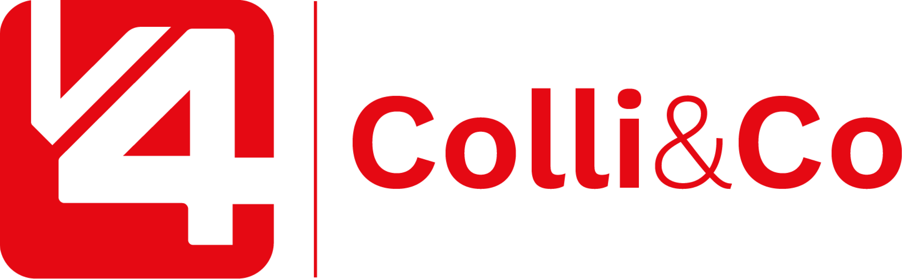

Barueri e Cajamar
Alphaville e Santana de Parnaíba no raio.

Reunião de fechamento. Assessoria de Growth.
A venda existe. O rastro dela, não.
Alphaville e Santana de Parnaíba no raio.
Oficina, obra, manutenção e quem entra na loja.
O mesmo time atende o balcão e a mensagem.
maben.com.br e mabenparafusos.com.br.
Sem canal de aquisição, sem previsibilidade de venda e sem dado para medir mídia.
[N] × [conversão] × [ticket]
[N] × [% que esfria] × [ticket]
[N] × [% perdida] × [ticket]
[N] × [% recuperável] × [ticket]
Cada etapa resolve uma trava. Clique e pergunte o que ficou claro.
A verba só entra quando a casa está de pé.
Dono por canal, roteiro de qualificação e CRM com origem, etapa e perda.
Follow-up de orçamento e inativo. Carrinho e catálogo do e-commerce no que já dá para vender.
Canal de aquisição ligado ao CRM. A mídia entra com número de retorno.
Mesma trava: [01 a 04]
[pedidos, recompra ou receita]
meses até o resultado
Não é o preço. É para saber se o tamanho do problema está claro.
Para tirar atendimento, discurso, CRM e follow-up do escuro:
Valor regular · 12 mesesAssessoria de Growth · time dedicado · account, tráfego, copy e design
Verba de mídia definida à parte, com vocês.
Hoje, na call
Google, Meta, os dois sites e WhatsApp
Onda 01 com Aline em [data]
Dono, roteiro e jornada em até 15 dias
Com cashback EE e desconto de fechamento
O valor já investido na estruturação, devolvido nesta condição
Oportunidades · canais · time · rotina · objeções
A conversa existe. Só não está escrita para o digital.
Barueri, Cajamar, Alphaville e Santana de Parnaíba.
Parafuso, ferramenta e ferragem são buscas concretas.
Dona da conta com a direção da Maben.
Google e Meta ligados às duas unidades.
Roteiro de urgência, disponibilidade e adequação técnica.
Peça, aplicação e unidade com a mesma cara.
Dúvida e desbloqueio sem esperar pauta.
O que não converte sai na mesma semana.
O que entrou, o que travou, o que muda.
Report, verba de mídia e decisão.
A verba entra na Onda 03, com dado. Referência: [R$/mês].
[N] orçamentos ou carrinhos recuperados por mês pagam a assessoria.
O ERP fica. O CRM registra a jornada que ele não mostra: origem, etapa, perda, recompra.
A Onda 01 não anuncia. Cada mês no escuro custa [R$ X ÷ 12].
